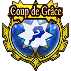

| Lv: | 140 |
|---|---|
| HP: | |
| MP: | |
| ATK: | |
| DEF: | |
| AGL: | |
| WIS: | |
| Move: | |
| Weight: | 65 |
| Weaknesses: | |
|
/ | |
|
|---|---|---|---|---|---|
| Resistances: | |
|
/ | |
|
| Immunities: | |
| Abilities | ||||||
|---|---|---|---|---|---|---|
| Level | Type | Name | MP | Element | Range | Description |
| 1 |  |
ハイドロソード | 88 |  |
 1-2 |
Deals major Crack-type phsyical damage (410% potency) to 1 enemy, often raises damage taken for 3 turns Can only be used in Water Sigil state |
| 1 |  |
水竜の剣閃 | 48 | |
1-4 |
Deals moderate Crack-type physical damage (200% potency) to 1 enemy, occasionally stuns |
| 38 |  |
Maelstrom | 152 | |
 Fan |
Deals major unreflectable Crack-type spell damage proportional to ATK to all enemies in area of effect, pulls them up to 2 spaces closer |
| 52 |  |
シャークアタック | 125 |  |
1-3 |
Deals major martial damage proportional to ATK to 1 enemy, ignores some Light Damage Res and cannot be negated by HP preserve effects |
| 82 |  | The Greater Leveller | 145 | |
 Front |
Deals major unreflectable spell damage proportional to ATK to all enemies in area of effect, removes some status changes from enemy Turns needed: 2 turns (Times usable: 1) |
 |
Water Sigil | 107 | |
Self |
Grants the user Water Sigil for 99 turns (Times usable: 1) When a unit is in the Water Sigil state, the unit's Crack-type potency is increased by 20% (due to Water Sigil base perk), and the use of ハイドロソード is enabled |
|
| Base Perks | ||
|---|---|---|
| Level | Name | Description |
| 1 | ATK +15 | Raises max ATK by 15 |
| 1 | DEF +20 | Raises max DEF by 20 |
| 1 | エデンの戦士 | Action start on even turns until turn 10: Removes some status ailments |
| 1 | Water Sigil | While in Water Sigil state: Raises Crack-type potency by 20% |
| 110, 120, 130, 140 | Physical Potency/Recovery +2% | Raises physical potency/recovery by 2% |
| 110, 120, 130, 140 | Spell Potency/Recovery +2% | Raises spell potency/recovery by 2% |
| 110, 120, 130, 140 | Martial Potency/Recovery +2% | Raises martial potency/recovery by 2% |
| Awakening Perks | ||
|---|---|---|
| Awakening | Name | Description |
| 1 | みなぎるパワー | Battle start: Raises AGL for 3 turns Action start on odd turns until turn 10: Raises ATK, DEF, and AGL for 3 turns |
| 2 | Frizz Res +25 | Raises Frizz resistance by 25 |
| 3 | 精霊の守護 | Battle start, action start, or when revived: Reduces damage taken by 30% if user's HP is 50% or over |
| 3, 5 | Physical Potency/Recovery +5% | Raises physical potency/recovery by 5% |
| 3, 5 | Spell Potency/Recovery +5% | Raises spell potency/recovery by 5% |
| 3, 5 | Martial Potency/Recovery +5% | Raises martial potency/recovery by 5% |
| 4 | Zam Res +25 | Raises Zam resistance by 25 |
| 5 | Max HP +100 | Raises max HP by 100 |
| 1, 2, 3, 4, 5 | Stats Up | Raises HP, MP, ATK, DEF, WIS and AGL by 5% |
| Character Builder | ||
|---|---|---|
| Name | Description | |
| Water Sigil | Grants the user Water Sigil for 99 turns (Times usable: 1) |
|
| 漁師の息子 | Heals 50% of max HP when the user's HP drops to 70% or less, 1 time per battle This perk can be triggered when the attack is from an ally |
|
| 精霊の祝福 | Action start: Heals 10% of max HP and restores 4% of max MP | |
| DEF +50 | Raises max DEF by 50 | |
| All Damage Down 0.5% | Reduces all damage taken by 0.5% | |
| All Damage Down 1% | Reduces all damage taken by 1% | |
| All Damage Down 1.5% | Reduces all damage taken by 1.5% | |
| All Damage Down 2% | Reduces all damage taken by 2% | |
| Frizz Res +5% | Raises Frizz resistance by 5 | |
| Zam Res +5% | Raises Zam resistance by 5 | |
| Max HP +20 | Raises max HP by 20 | |
| Max HP & Max MP +30 | Raises max HP and max MP by 30 | |
| Max MP +20 | Raises max MP by 20 | |
| ATK +10 | Raises max ATK by 10 | |
| ATK & WIS +15 | Raises max ATK and max WIS by 15 | |
| WIS +10 | Raises max WIS by 10 | |
| DEF +10 | Raises max DEF by 10 | |
| DEF & AGL +15 | Raises max DEF and max AGL by 15 | |
| AGL +10 | Raises max AGL by 10 | |
| 水竜の剣閃 potency +2% | Raises 水竜の剣閃 potency by 2% | |
| 水竜の剣閃 potency +3% | Raises 水竜の剣閃 potency by 3% | |
| Maelstrom potency +2% | Raises Maelstrom potency by 2% | |
| Maelstrom potency +3% | Raises Maelstrom potency by 3% | |
| シャークアタック potency +2% | Raises シャークアタック potency by 2% | |
| シャークアタック potency +3% | Raises シャークアタック potency by 3% | |
| The Great Leveller potency +2% | Raises The Great Leveller potency by 2% | |
| The Great Leveller potency +3% | Raises The Great Leveller potency by 3% | |